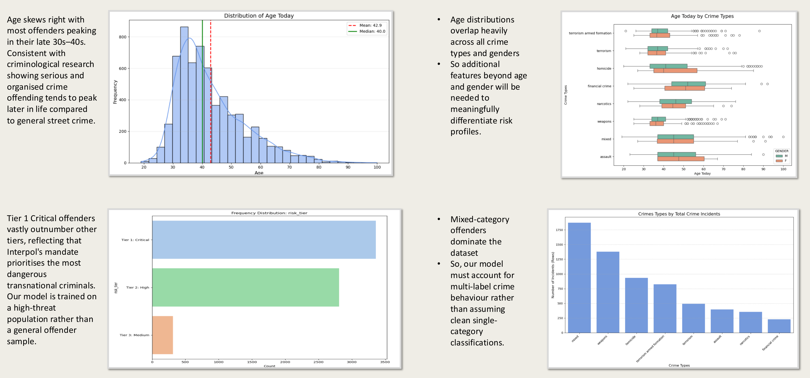
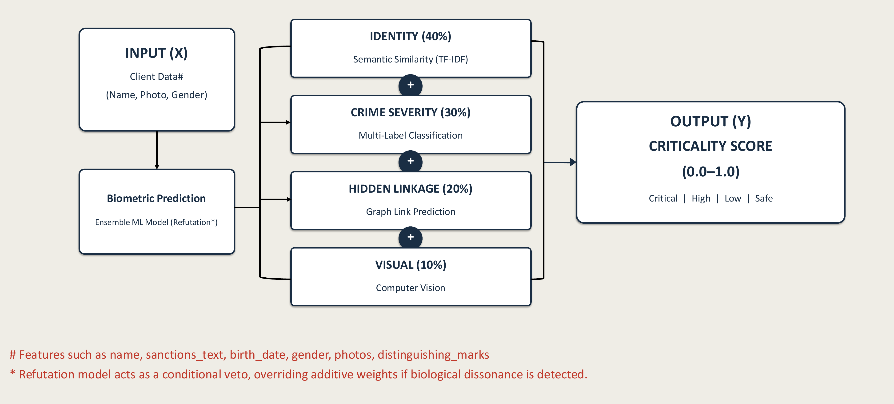
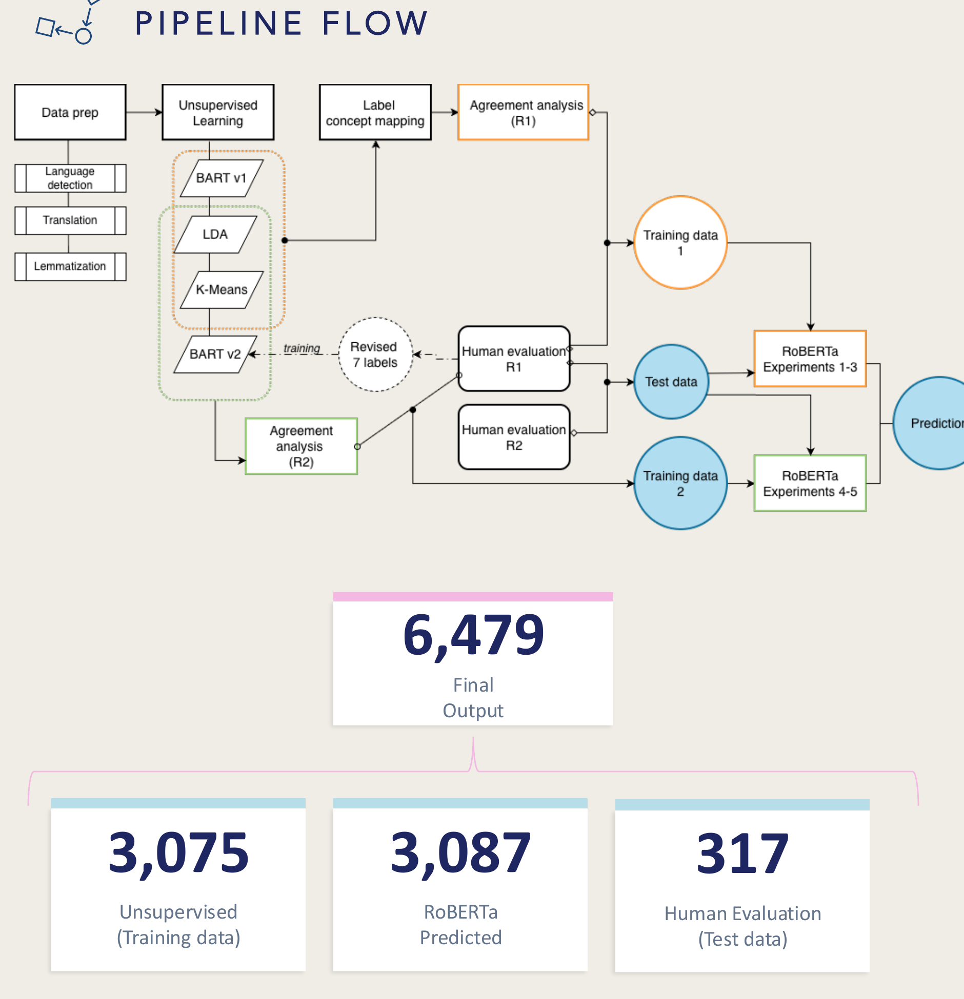
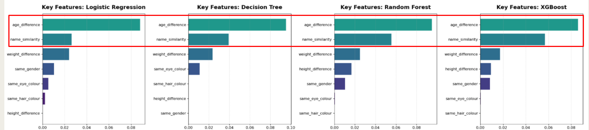
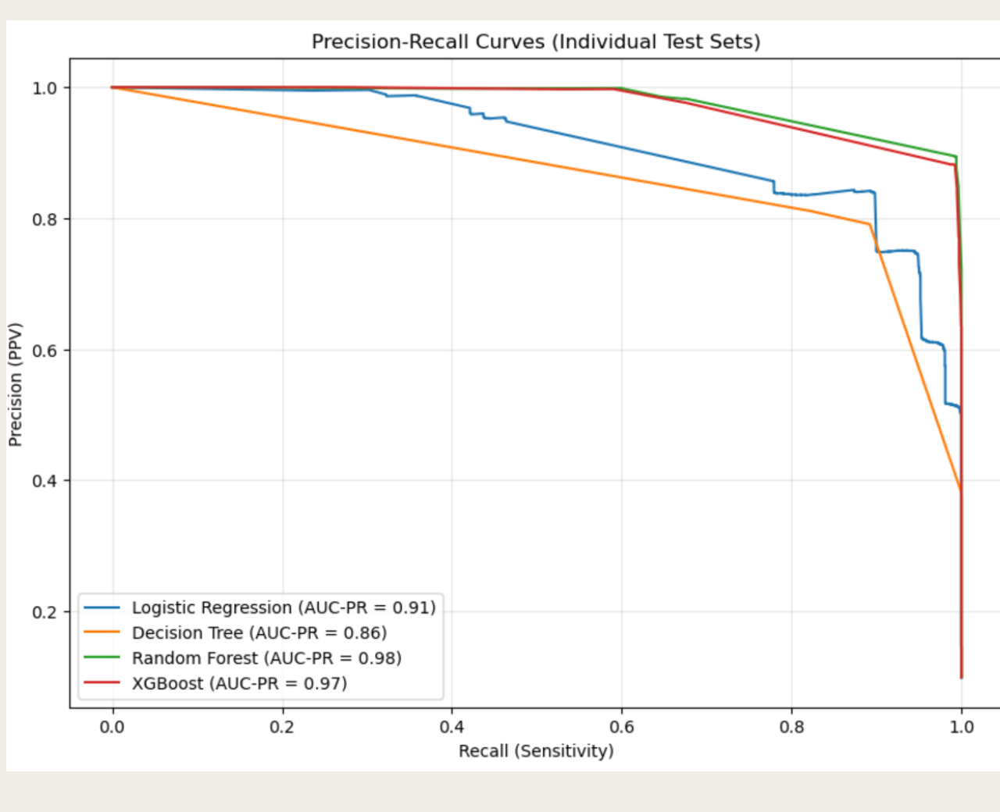
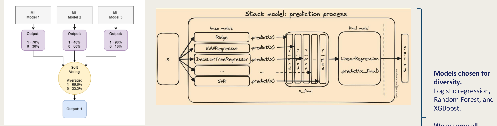
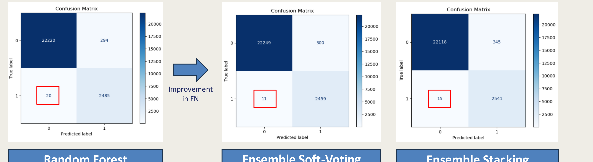

The analyst's trap
Rigid, deterministic blacklist matching flags every submitted name equally, with no sense of context. Two gaps go unnoticed at once: a partial or reformatted name isn't recognized as the same person, and a minor offense gets treated with exactly the same urgency as a major one. A compliance team we looked at spent about 15 minutes of manual review per alert and still carried high rates of both false negatives and false positives.
Concretely: a partial-name match tied to a minor offense gets the identical flag as an exact-name match tied to a terrorism link. A matcher with no sense of context can't tell those apart, so both cost the same review time — and the more dangerous case doesn't get prioritized.
- Identity. Fuzzy name matching (TF-IDF) instead of exact-string blacklist comparison.
- Context. Granular crime-severity tiers instead of one flat "match / no match" category.
- Verification. Biometric refutation that auto-clears genuine non-matches instead of escalating every namesake.
Data
The dataset is drawn from the real, publicly-listed 2026 Red Notice roster — among the names on it are already-public fugitives such as Ruja Ignatova and Dawood Ibrahim Kaskar.
What the data actually looks like
Before building anything, it's worth checking what population the model would actually be trained on.

- Mixed-category offenders dominate. The model has to handle multi-label crime behaviour, not assume a clean single category per record.
- Age peaks in the late 30s–40s. Consistent with criminological research showing serious, organised crime offending peaks later in life than general street crime.
- Tier 1 Critical vastly outnumbers other tiers. INTERPOL's mandate prioritises the most dangerous transnational criminals — the model is trained on a high-threat population, not a general offender sample.
- Age and gender alone don't separate risk profiles. Distributions overlap too heavily across crime types — additional features are required to differentiate meaningfully.
Four pillars, one score, one veto
Client data (name, photo, gender) feeds two things in parallel: a biometric prediction, and four weighted pillars — Identity (40%), Crime Severity (30%), Hidden Linkage (20%), and Visual (10%) — that sum into a criticality score from 0.0 to 1.0, bucketed into Critical, High, Low, or Safe.

Pillar 1: Identity (40%) — semantic similarity via TF-IDF
Each fugitive name is broken into overlapping character n-grams (2–4 characters); TF-IDF weighs each n-gram by how distinctive it is across all 6,479 names. A submitted name gets vectorized the same way and ranked against every fugitive vector by cosine similarity — the top match passes forward as the identity pillar's score.
TF-IDF was benchmarked against SBERT, a modern neural embedding model, on 1,000 perturbed name queries before committing to it — the character-level approach won on 6 of 7 metrics.
| Metric | TF-IDF | SBERT | Winner |
|---|---|---|---|
| MAP | 0.8857 | 0.8801 | TF-IDF |
| Recall@1 | 0.8160 | 0.8130 | TF-IDF |
| Recall@3 | 0.9540 | 0.9430 | TF-IDF |
| Recall@5 | 0.9690 | 0.9640 | TF-IDF |
| Mean positive similarity | 0.8754 | 0.8884 | SBERT |
| Mean negative similarity | 0.0213 | 0.2984 | TF-IDF |
| Positive–negative separation | 0.8541 | 0.5901 | TF-IDF ✓ |
The separation between genuine and unrelated matches (0.854 vs. 0.590) is what decided it — character-level matching handles name variants more robustly than a neural embedding tuned for semantic, not orthographic, similarity.
Pillar 2: Crime severity (30%) — crime-type classification
6,479 fugitive records had sanctions text but no crime labels — automated categorisation was needed for compliance risk routing. Three unsupervised methods (BART zero-shot, LDA latent themes, K-Means clustering) built a training set through 3-way agreement, refined by two rounds of human evaluation, before a supervised RoBERTa classifier became the final model.

| Experiment | Label source | LR | Epochs | Accuracy | Macro F1 |
|---|---|---|---|---|---|
| 1 | BART v1 + LDA | 2e-5 | 5 | 0.831 | 0.83 |
| 2 | BART v1 + LDA | 1e-5 | 3 | 0.825 | 0.83 |
| 3 | BART v1 + LDA | 1e-5 | 5 | 0.828 | 0.83 |
| 4 ★ | BART v1 + LDA | 2e-5 | 5 | 0.922 | 0.91 |
| 5 | BART v2 + LDA (lem.) | 2e-5 | 5 | 0.912 | 0.90 |
| Category | Count | % | Severity | Risk tier |
|---|---|---|---|---|
| Terrorism | 1,580 | 24.4% | 1.0 | Tier 1 — Critical |
| Homicide | 1,319 | 20.4% | 0.9 | Tier 1 — Critical |
| Sexual crime | 459 | 7.1% | 0.8 | Tier 2 — High |
| Armed formation | 1,592 | 24.6% | 0.7 | Tier 2 — High |
| Assault | 826 | 12.7% | 0.7 | Tier 2 — High |
| Narcotics | 388 | 6.0% | 0.7 | Tier 2 — High |
| Financial crime | 315 | 4.9% | 0.5 | Tier 3 — Medium |
Pillar 3: Visual (10%) — disguise-robust embeddings
Facial landmarks (eyes, cheeks, jawline, forehead, chin) are detected, and synthetic disguise assets — a mask, bandana, wig, sunglasses, spectacles, beard, or beanie — are geometrically aligned onto them, to test whether an embedding model can still recognise the same identity underneath.
The baseline is Face-MAE — a masked-autoencoder, self-supervised Vision Transformer trained on large facial datasets, producing a 762-D embedding. The fine-tuned version, Disguised-Face-MAE, adds a dense + batch-norm head trained with supervised contrastive loss on a real disguised-face dataset: same-identity pairs get pulled together in embedding space, different identities get pushed apart.
| Metric | Baseline (Face-MAE) | Fine-tuned (Disguised-Face-MAE) |
|---|---|---|
| μ disguised-match (genuine similarity) | 0.9580 | 0.9631 |
| μ stranger (imposter similarity) | 0.8394 | 0.5896 |
| Separation gap, Δ | 0.1185 | 0.3735 |
Fine-tuning barely moved the genuine-match score (already near-ceiling) but more than tripled the separation gap — the fine-tuned model got dramatically better at telling two different people apart, which is the harder and more important half of the problem. At inference, a sigmoid over cosine similarity, centered on the midpoint between the two means, converts a raw similarity score into the visual pillar's contribution.
Pillar 4: Hidden linkage (20%) — graph link prediction
The question this pillar answers: how structurally connected is this entity to suspicious clusters? A graph of all 6,479 fugitives gets an edge between two records whenever they share both a country and a crime type — two 2-layer GNNs (GCN and GraphSAGE) were trained on that graph for link prediction.
| Metric | GCN | GraphSAGE | Winner |
|---|---|---|---|
| AUC | 0.9971 | 0.9978 | GraphSAGE ✓ |
| Recall @0.5 | 0.9999 | 0.9998 | GCN (marginal) |
| Hits@10 | 0.9193 | 0.9194 | GraphSAGE ✓ |
| Hits@50 | 0.9194 | 0.9194 | Tie |
| Hits@100 | 0.9194 | 0.9194 | Tie |
GraphSAGE was selected for its higher AUC and its inductive capability — it generalises to fugitives not seen during training, which GCN can't do natively.
A case like that is deeply embedded in a terrorism-linked cluster — the network signal alone can drive escalation even when identity and biometric checks come back inconclusive.
Biometric refutation, the veto
100,000 synthetic rows were generated to train this model: ~6,000 real fugitives with no variation, ~4,000 synthetic "bad actors" with perturbed names (swapped, shuffled, dropped, or duplicated) and slightly altered height, age, and hair/eye colour, plus 50% "good actors" with fully randomized identity and 50% good actors who — deliberately — share a fugitive's exact name. That last group is the hardest and most important case: an innocent person who happens to have the same name as someone on the list.

| Model | F2 | F1 | Accuracy | Precision | Recall | FPR |
|---|---|---|---|---|---|---|
| Logistic Regression | 0.8891 | 0.8694 | 0.9729 | 0.8385 | 0.9027 | 0.0193 |
| Decision Tree | 0.8756 | 0.8415 | 0.9661 | 0.7902 | 0.8999 | 0.0265 |
| Random Forest | 0.9708 | 0.9385 | 0.9870 | 0.8892 | 0.9936 | 0.0138 |
| XGBoost | 0.9702 | 0.9376 | 0.9868 | 0.8879 | 0.9932 | 0.0139 |



The full system, end to end
Client data comes in and hits biometric prediction first. A match (≥0.5) short-circuits everything else: final risk is set to 1.0, CRITICAL, freeze and escalate — no need to run the additive scoring at all. A mismatch (<0.5) routes into the four-pillar criticality score instead.
| Risk tier | Score range | Action |
|---|---|---|
| Critical | 0.75–1.00 | Freeze + escalate to compliance officer |
| High risk | 0.50–0.74 | Senior analyst review within 24hr |
| Review | 0.25–0.49 | Junior analyst flag, monitor 30 days |
| Low risk | 0.00–0.24 | Pass, log to audit trail |
Validation: 24 synthetic test cases
Five groups, deliberately ordered from easiest to hardest: an exact name with a full biometric match, a name with a typo but close biometrics, an exact name with a different person's biometrics, a partial name overlap with unrelated biometrics, and a very short name with an unrelated biometric profile. 9 cases are true fugitives (the first two groups); 15 are innocents (the last three) — the innocents deliberately include the hardest case a matcher can face: an exact name collision with a genuine fugitive.
Validation results
| Threshold | TP | TN | FP | FN | Recall | Precision | Accuracy |
|---|---|---|---|---|---|---|---|
| Critical (≥0.75) | 7 | 13 | 2 | 2 | 77.8% | 77.8% | 83.3% |
| High risk+ (≥0.50) | 9 | 2 | 13 | 0 | 100% | 40.9% | 45.8% |
| Review+ (≥0.25) | 9 | 0 | 15 | 0 | 100% | 37.5% | 37.5% |
Why innocents still get flagged
| Group | Cases | Bio rejected? | Final range | Tier | Why still flagged |
|---|---|---|---|---|---|
| Exact same name | 3 | Yes (≤0.03) | 0.69–0.92 | Critical / High | Identical name + crime severity + hidden linkage |
| Partial name overlap | 6 | Yes (≤0.01) | 0.54–0.68 | High risk | Partial surname overlap + crime severity |
| Short name | 6 | Yes (=0.00) | 0.48–0.68 | Review / High | Crime severity + hidden linkage push score up |
- Over-flagging is by design. Compliance prefers false positives over missed fugitives — that trade-off is intentional, not a bug.
- Biometric prediction works as intended. It rejected all 15 innocents outright and confirmed 7 of 9 true fugitives without needing the criticality score at all.
- The exact-same-name case is the hardest. Identical names plus similar identity signals can overwhelm the biometric rejection on their own, pushing an innocent person's score into High Risk territory.
- Tuning opportunity. Increasing the biometric weight, or reducing the influence of identity, crime severity, and hidden linkage similarity, would cut false High-Risk flags — a direct lever for the precision/recall trade-off.
A conversational front end
The same four-pillar pipeline sits behind INTERPOL IRIS — a Streamlit interface, backed by a GPT-class model, that lets an analyst screen a client name or ask a question conversationally instead of reading a raw dashboard.